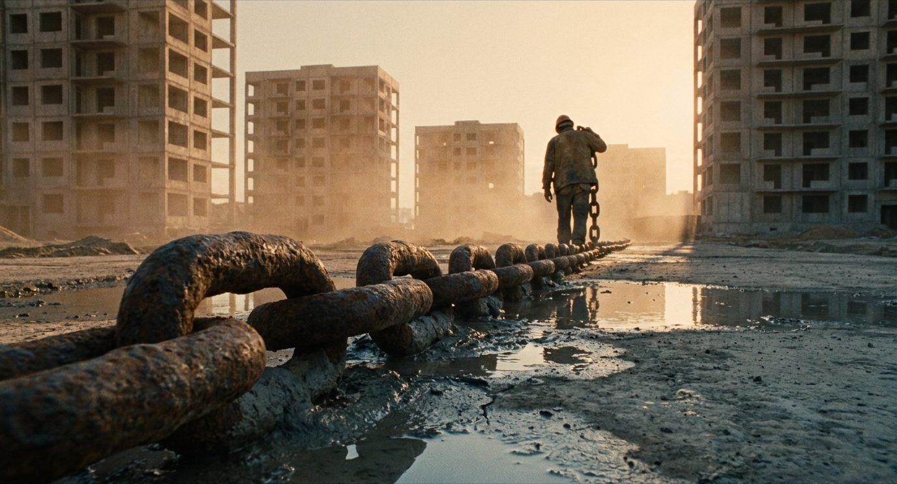

НЕОПЛАТА / СЛУЧАЙ ИЗ ПРАКТИКИ
Долг закрывали на следующем объекте: как четыре дома подряд превратились в 28 млн

Случай из практики, известный автору. Отделочная компания четыре дома подряд работала у одного генподрядчика и каждый раз соглашалась вести неоплаченное «в учёте» — под обещание закрыть долг на следующем объекте. К развязке долг составил 28 млн рублей и остался на юрлице без активов и без новых контрактов. Здесь разобрано, в каких именно точках решалась развязка и что делать с первого неоплаченного акта.
Повествование от третьего лица: участники действующие. Названия компаний и объектов не приводятся. Суммы и сроки — как в рассказе участника.
Что случилось
Застройщик вёл крупный жилой микрорайон на банковском финансировании и строил последовательно, дом за домом. Часть стройки финансировалась оборотными средствами субподрядчиков и поставщиков: долг за выполненное «закрывался на следующем объекте», а следующий объект порождал новый долг.
Отделочная компания прошла по этой цепочке четыре дома — около четырёх с половиной лет от ввода первого объекта до развязки. Схема держалась ровно до тех пор, пока субподрядчик устраивал генподрядчика. Замена пришла, как только перестал.
Условия на входе
- Гарантийные удержания по договору — 10%: половина возвращается через шесть месяцев после ввода объекта, остаток — через год.
- Коллективная ответственность и штрафы за срыв сроков.
- Смета по единичным расценкам: раздел проекта по отделке не был доработан, по сути — проект типового этажа с перечнем работ.
Последний пункт кажется техническим, но он и создал будущий спор: объёмов по подвалам, техническим помещениям и спускам в парковку в проекте не было, и стороны договорились «зафиксировать по факту».

Крючок постоянного потока
На половине выполнения генподрядчик объявил тендер на отделку следующего дома — сроки и строительная готовность как раз подходили к завершению работ на текущем. Приоритет получил действующий субподрядчик, контракт был заключён.

Здесь и появляется механизм, ради которого стоит читать этот случай. Имея постоянный денежный поток, компания перестала придавать значение отсутствию объёмов в проекте: работа есть, деньги идут, оформим потом. Обещание следующего контракта работает как оплата — хотя оплатой не является.
Гонка к вводу и что осталось после
Чтобы успеть в срок и перейти на следующий объект, привлекали дополнительные бригады — дороже штатных, отдельно нанимали плиточников и стяжку. Основной состав ушёл на второй дом, на первом осталась бригада на доделках. Перед вводом инженерные смежники портили готовую отделку; генподрядчик просил восстанавливать, обещая всё принять.

После ввода начали оформлять допсоглашения на объёмы, не попавшие в проект, и ремонтно-восстановительные работы за счёт третьих лиц — по актам коллективной ответственности. Смежники отказывались подписывать акты, ПТО и сметчики сверяли объёмы, а компания уже работала на втором объекте.
Когда затраты собрали, выяснилось: бюджет по статье исчерпан, и подходят внутренние сроки приёма документов. Документы в итоге приняли — но платить было не из чего. Долг провели в учёте и пообещали закрыть на новом объекте.
Гарантийные удержания как рычаг
Условием снятия гарантийных удержаний генподрядчик поставил подписание письма о выводе удержаний у управляющей компании, принявшей дом. Параллельно предложил контракт на следующий объект на тех же условиях.
Дальше схема повторилась на втором и третьем домах. Спустя около двух лет после ввода первого дома часть долга компания смогла только провести в учёте. Оборотные средства шли, на зарплату хватало, иногда собственник докидывал свои — и это притупляло тревогу.
Развязка на четвёртом объекте
Заказчик завёл второго генподрядчика, и четвёртый дом ушёл через него. Старый генподрядчик сообщил, что денег нет, а новый объект финансируется на другое юрлицо, — и предложил в счёт долга квартиру из оставшихся.
Квартира стоила больше долга. Выбор был между доплатой, которой не было, и продолжением накопления долга на следующем контракте. Согласились на квартиру. Сроки по договору на неё вышли раньше, чем удалось доформировать долг, — квартиру забрали.
Результат числом
Результат отрицательный, и приводится он именно поэтому: случай полезен тем, чем он закончился.
- Долг генподрядчика перед отделочной компанией — 28 млн, часть из них заморожена в гарантийных удержаниях.
- Собственные долги, накопленные из-за неплатежей: налоги — 8 млн, долг перед бригадами — 1,8 млн.
- Долг остался на юрлице без активов и без новых контрактов. Документы в суд готовятся, перспектива взыскания в этом случае оценивается как нулевая: взыскивать не с кого.
Случай не единичный. По той же схеме долги накопились перед другими субподрядчиками микрорайона — у кого 25 млн, а у крупных контрактов, шедших со своими материалами, кредиторская задолженность доходила до 92 млн.
Три точки, где всё решалось
Из хода событий видно, что развязка готовилась не в последний год, а в трёх конкретных согласиях:
- Согласие вести долг «в учёте» под обещание закрыть его на следующем объекте. С этого момента новый контракт заменил собой оплату.
- Подписание письма о выводе гарантийных удержаний как условия их снятия.
- Договор на квартиру дороже долга со сроками, которые нечем было исполнить.
Что делать с первого неоплаченного акта
Вывод участника кейса короткий: не копить кредиторскую задолженность годами — взыскивать, пока у должника есть активы или действующие контракты. Он раскладывается в порядок действий.
- Не вести долг «в учёте» под обещания. Каждый неоплаченный акт получает письменный след: уведомление о просрочке с запрошенной датой оплаты, затем претензия с расчётом процентов.
- Проверять должника, пока с ним работаешь. Картотека арбитражных дел, Федресурс, свежая выписка. Появление второго генподрядчика или нового юрлица под тот же объект — сигнал того же ряда.
- Не менять оплату на обещание следующего контракта. Новый договор не погашает старый долг и в суде его не заменяет.
- Отдельно смотреть на условия снятия гарантийных удержаний. Если снятие обусловлено действием в пользу третьей стороны, это условие стоит читать до подписи, а не после ввода.
Для разрешения спора проверьте действующие условия договора, доказательства признания долга и применимый порядок взыскания.
БЕСПЛАТНО, ЗА EMAIL
КС подписаны, денег нет: первые 7 проверок
С первого неоплаченного акта: алгоритм проверки своих документов, калькулятор срока оплаты, перечень документов для претензии и заготовка первого письма заказчику.
- Алгоритм первичной проверки
- Калькулятор срока оплаты
- Перечень документов для претензии
- Шаблон первого письма заказчику
ПЛАТНЫЙ КОМПЛЕКТ · P1 / 18 ФАЙЛОВ
Получение оплаты за выполненные работы
Документы для подтверждения выполненных объёмов и передачи КС-2/КС-3, уведомление о просрочке, претензия, расчёт процентов по статье 395 ГК РФ и материалы для взыскания задолженности. Перед направлением документов проверьте условия договора, сроки и фактические суммы. Всего 18 файлов.
29 900 ₽
Посмотреть комплект →